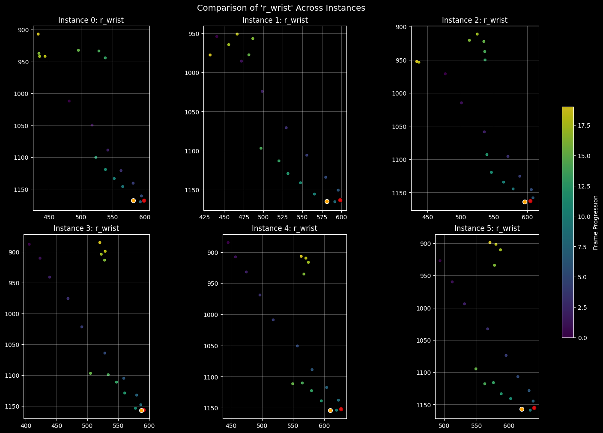
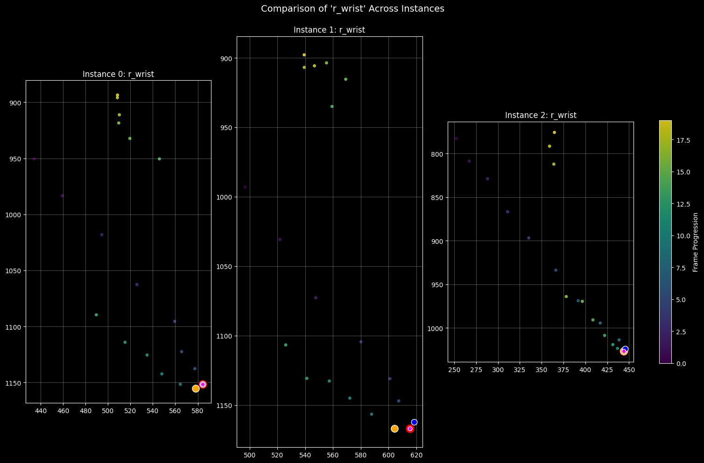

complex_backswing_top_frames = [get_top_idx(SwExt_list[x].kps.r_wrist, y_axis_only=True, thresh_value=0.01) for x inrange(len(SwExt_list))]complex_backswing_top_frames
[30, 31, 31, 33, 33, 32]
Code
backswing_top_idxs = [np.argmin(SwExt_list[x].kps.r_wrist[:, :2].sum(axis=1)) for x inrange(len(SwExt_list))]backswing_top_idxs
[31, 31, 32, 33, 34, 32]
Code
highlight_frames = [np.argmax(SwExt_list[x].kps.r_wrist[:, :2].sum(axis=1)) for x inrange(len(SwExt_list))]plot_feature_across_instances(SwExt_list, feature_name='r_wrist', highlight_frames=backswing_top_idxs, highlight_frames_orange=complex_backswing_top_frames)
Lets find the contact frame
Code
before_increment =-20after_increment =40cleaned_df['start_idx'] = cleaned_df['first_higher_wrists_backswing_frame'] - before_incrementcleaned_df['end_idx'] = cleaned_df['first_higher_wrists_backswing_frame'] + after_incrementdf5 = cleaned_df[cleaned_df.score.map(lambda x: x ==5)]df1 = cleaned_df[cleaned_df.score.map(lambda x: x ==1)]test_df = pd.concat([df5.iloc[:3], df1.iloc[:3]]).reset_index(drop=True)SwExt_list = []for idx, row in test_df.iterrows(): SwExt_list.append(SwingExtractor(row))clip_names = [SwExt_list[x].clip_name for x inrange(len(SwExt_list))]print(clip_names)
def get_top_idx(kps, y_axis_only=True, thresh_value=0.001): pos = kps[:, :2] #.r_wrist[:, :2] # (T, 2) pos_s = savgol_filter(pos, window_length=9, polyorder=2, axis=0) v = np.diff(pos_s, axis=0) # (T-1, 2) frame-to-frame velocity speed = np.linalg.norm(v, axis=1) thresh = thresh_value * speed.max()if y_axis_only: vy = v[:, 1] # vertical component sign = np.sign(vy) cross = np.where((sign[:-1] <0) & (sign[1:] >0) & (speed[:-1] > thresh) & (speed[1:] > thresh))[0] change_frame = cross[0] +1iflen(cross) elseNoneelse:# 1. Compute dot product between consecutive velocity vectors# Shapes: (T-2, 2) * (T-2, 2) -> (T-2,) dot = np.sum(v[:-1] * v[1:], axis=1)# 2. Check speed for the SAME vectors used in the dot product# speed[:-1] corresponds to v[:-1] (velocity entering the turn)# speed[1:] corresponds to v[1:] (velocity exiting the turn) candidates = np.where((dot <0) & (speed[:-1] > thresh) & (speed[1:] > thresh))[0]# 3. Adjust index# candidates[0] is the index in the 'dot' array.# dot[i] compares frame i and i+1 (in velocity space), which is frame i+1 and i+2 in position space.# We usually want the frame *at* the vertex (the point between the vectors).# If v[0] is pos[1]-pos[0], the "turn" happens at pos[1].# So index + 1 is generally correct for the "vertex" frame. change_frame = candidates[0] +1iflen(candidates) >0elseNonereturn change_frame
Code
[np.argmax(SwExt_list[x].kps.r_wrist[:, :2].sum(axis=1)) for x inrange(len(SwExt_list))]
[6, 7, 7, 9, 9, 8]
Code
[get_top_idx(SwExt_list[x].kps.r_wrist, y_axis_only=True, thresh_value=0.01) for x inrange(len(SwExt_list))]
[8, None, 8, 11, 11, 11]
Code
contact_idxs = [8,9,8,10,11,10]highlight_frames = [np.argmax(SwExt_list[x].kps.r_wrist[:, :2].sum(axis=1)) for x inrange(len(SwExt_list))]plot_feature_across_instances(SwExt_list, feature_name='r_wrist', highlight_frames=highlight_frames, highlight_frames_orange=contact_idxs)

Now lets look at just top of backswing to contact
Code
complex_backswing_top_frames, highlight_frames
([30, 31, 31, 33, 33, 32], [6, 7, 7, 9, 9, 8])
Code
# 20 frames before the first wrist over shouldertop_frame = np.array(complex_backswing_top_frames) -20#top_frame = np.array(backswing_top_idxs) - 20#bottom_frame = np.array(contact_idxs) + 20bottom_frame = np.array(highlight_frames) +20bottom_frame - top_frame
#highlight_frames = [np.argmax(SwExt_list[x].kps.r_wrist[:, :2].sum(axis=1)) for x in range(len(SwExt_list))]plot_feature_across_instances(SwExt_list, feature_name='r_wrist', highlight_frames=start_frame_idxs,#[10]*6, highlight_frames_orange=[80]*6,# highlight_frames=highlight_frames,#highlight_frames_orange=contact_idxs#smooth=False,#smooth_window=11 )

Code
def plot_feature_across_instances(data_instances, feature_name, plot_names=None, figsize=(15, 10), highlight_frames=None, # Original Red Highlight highlight_frames_orange=None, smooth=False, smooth_window=7, smooth_poly_order=3): # New Orange Highlight""" Plots the trajectory of a SINGLE feature across MULTIPLE data instances in a 3-column grid with optional Red and Orange highlight points. Args: data_instances (list): A list of class instances containing the data. feature_name (str): The specific attribute name to plot. plot_names (list of str, optional): Titles for each subplot. figsize (tuple): Dimensions of the figure. highlight_frames (list of int, optional): List of frame indices to highlight in RED. highlight_frames_orange (list of int, optional): List of frame indices to highlight in ORANGE. """# 1. Setup Grid num_plots =len(data_instances) cols =3 rows =int(np.ceil(num_plots / cols)) fig, axes = plt.subplots(rows, cols, figsize=figsize, constrained_layout=True)if num_plots ==1: axes_flat = [axes]else: axes_flat = axes.flatten() first_valid_plot =None# 2. Loop through instancesfor i, instance inenumerate(data_instances):if i >=len(axes_flat): break ax = axes_flat[i]try: data =getattr(instance.kps, feature_name)exceptAttributeError: ax.text(0.5, 0.5, f"Feature '{feature_name}'\nnot found", ha='center', va='center', transform=ax.transAxes)continueif data.ndim ==3and data.shape[1] ==1: data = data.squeeze(1)if data.ndim !=2or data.shape[1] <2: ax.text(0.5, 0.5, f"Invalid Shape\n{data.shape}", ha='center', va='center')continueif smooth: x = savgol_filter(data[:, 0], smooth_window, smooth_poly_order) y = savgol_filter(data[:, 1], smooth_window, smooth_poly_order) x = data[:, 0] y = data[:, 1]# Plot trajectory time_colors = np.arange(len(x)) sc = ax.scatter(x, y, c=time_colors, cmap='viridis', s=15, alpha=0.8)# --- Red Highlight (Original) ---if highlight_frames and i <len(highlight_frames): h_frame = highlight_frames[i]if h_frame isnotNoneand0<= h_frame <len(x): ax.scatter(x[h_frame], y[h_frame], color='red', alpha=0.8, s=60, zorder=6, edgecolors='black')# --- Orange Highlight (New) ---if highlight_frames_orange and i <len(highlight_frames_orange): h_frame_orange = highlight_frames_orange[i]if h_frame_orange isnotNoneand0<= h_frame_orange <len(x): ax.scatter(x[h_frame_orange], y[h_frame_orange], color='orange', alpha=0.6, s=50, zorder=6, edgecolors='white')# Title Logicif plot_names and i <len(plot_names): ax.set_title(plot_names[i])else: ax.set_title(f"Instance {i}: {feature_name}") ax.invert_yaxis() ax.set_aspect('equal') ax.grid(True, alpha=0.3)if first_valid_plot isNone: first_valid_plot = sc# 3. Hide unused subplotsfor j inrange(i +1, len(axes_flat)): axes_flat[j].axis('off')# 4. Add Colorbarif first_valid_plot: cbar = fig.colorbar(first_valid_plot, ax=axes, orientation='vertical', fraction=0.02, pad=0.04) cbar.set_label('Frame Progression') plt.suptitle(f"Comparison of '{feature_name}' Across Instances", fontsize=14) plt.show()
def plot_feature_trajectories(data_instance, feature_names=None, figsize=(15, 6), highlight_frame=None):""" Plots trajectories for specific attributes retrieved from a class instance. Args: data_instance: The class instance containing the data as attributes. feature_names (list of str): List of attribute names (e.g., ['r_wrist', 'hip_center']). Each attribute should return a numpy array of shape (Frames, 2). figsize (tuple): Dimensions of the entire figure. """if feature_names isNone: feature_names = ['r_sh', 'l_sh', 'r_elbow', 'l_elbow', 'r_wrist', 'l_wrist', 'r_hip', 'l_hip', 'r_knee', 'l_knee', #'r_ankle', 'l_ankle' ]# 1. Setup Grid num_plots =len(feature_names) cols =5 rows =int(np.ceil(num_plots / cols)) fig, axes = plt.subplots(rows, cols, figsize=figsize, constrained_layout=True) axes_flat = axes.flatten()# 2. Loop through feature names# We define the color mapper inside the loop or based on the first valid item# to ensure it matches the frame count of the data. first_valid_plot =Nonefor i, name inenumerate(feature_names):if i >=len(axes_flat): break ax = axes_flat[i]# --- KEY CHANGE: Dynamic Retrieval ---try: data =getattr(data_instance.kps, name)exceptAttributeError: ax.text(0.5, 0.5, f"Attribute '{name}'\not found", ha='center', va='center', transform=ax.transAxes)continue x = data[:, 0] y = data[:, 1]# Create Time Colors (based on length of this specific array) time_colors = np.arange(len(x))# Plot sc = ax.scatter(x, y, c=time_colors, cmap='viridis', s=15, alpha=0.8)# Highlight the specified frame with a red dotif highlight_frame isnotNoneand0<= highlight_frame <len(x): ax.scatter(x[highlight_frame], y[highlight_frame], color='red', s=50, zorder=5, edgecolors='black')# --- KEY CHANGE: Labeling --- ax.set_title(name.replace('_', ' ').title()) # e.g., "r_wrist" -> "R Wrist"# Standard CV Formatting ax.invert_yaxis() ax.set_aspect('equal') ax.grid(True, alpha=0.3)if first_valid_plot isNone: first_valid_plot = sc# 3. Hide unused subplotsfor j inrange(i +1, len(axes_flat)): axes_flat[j].axis('off')# 4. Add Colorbar (referenced to the first valid plot found)if first_valid_plot: cbar = fig.colorbar(first_valid_plot, ax=axes, orientation='vertical', fraction=0.02, pad=0.04) cbar.set_label('Frame Progression') plt.show()